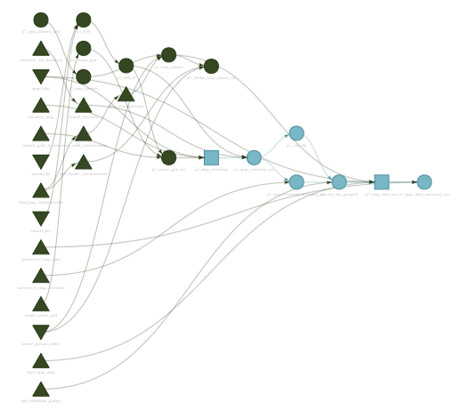
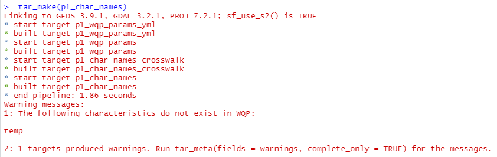
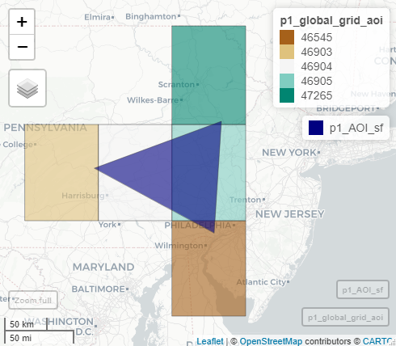
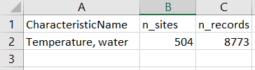
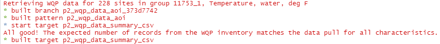
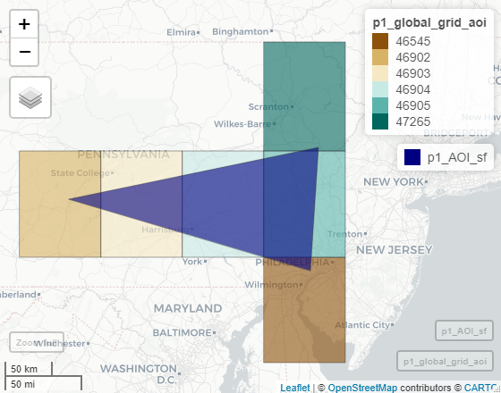
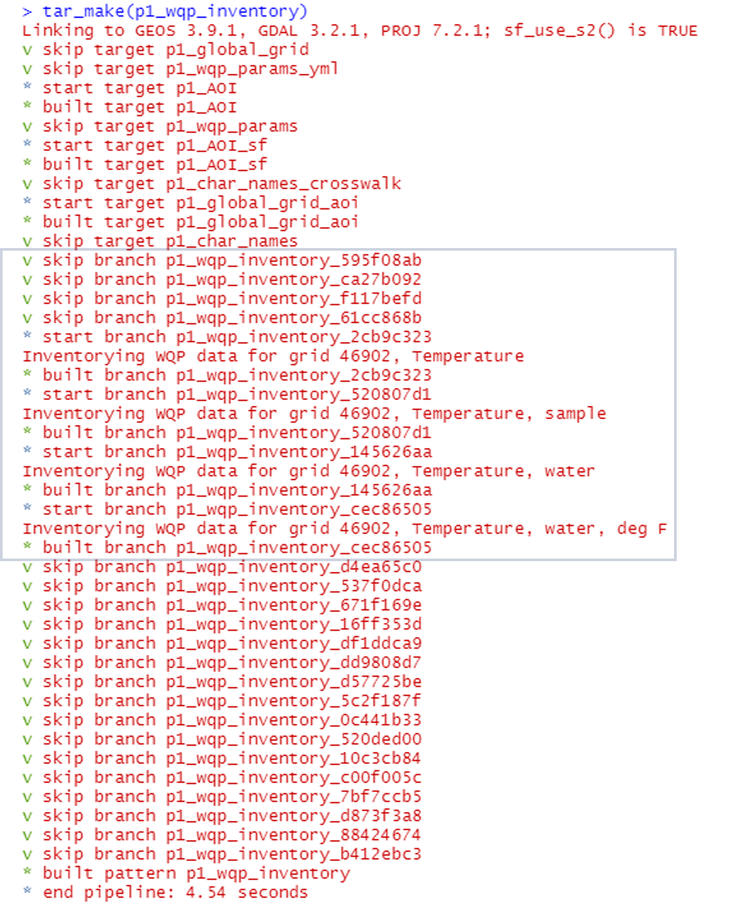

Large Data Pulls from Water Quality Portal - A Pipeline-Based Approach
Lauren Koenig (she/her)
Lindsay Platt (she/her)
Julie Padilla (she/her)
2022-09-27
Source:vignettes/wqp_large_pull_targets.Rmd
wqp_large_pull_targets.RmdBackground
The Water Quality Portal (WQP) database aggregates and
standardizes discrete water quality data from numerous federal, state,
tribal, and other monitoring agencies. The WQP enables the access and
retrieval of over 297,000,000 water quality records (Read et al. 2017)
through web services and an application programming interface (API) that
can be called programmatically using the dataRetrieval
package in R. Downloading data from the WQP represents a common pattern
across USGS data teams.
In this post, we highlight an example data pipeline to increase the reusability, reproducibility, and efficiency of WQP data workflows. This post is an alternative method to the script-based workflow presented in Large Data Pulls from Water Quality Portal - A Script-Based Approach. We’ve designed it with large-scale data pulls in mind, but this example pipeline will work at any spatial or temporal scale.
Why targets?
The workflow described here uses the targets
package to leverage modular functions, dependency tracking, and
automated workflows to inventory and download data from the Water
Quality Portal. Using targets allows the user to develop a
maintainable pipeline that tracks changes over time and will only re-run
portions of the workflow that are out of date due to those changes.
The basic ingredient of a targets workflow is a script
file named _targets.R. This file is used to define and
configure all of the steps in an analysis pipeline and their connections
to each other. After connecting the individual analysis steps (also
known as targets) in the _targets file, the
targets package can then track the relationships between
each connection. Analysis steps that precede any given step of interest
are considered “upstream” while the analysis steps that follow are
considered “downstream”. Once these connections have been established,
targets can also visualize the relationships in a network
graph like the one shown below. The WQP pipeline is structured so that
various inputs - including the date range, spatial extent, parameters of
interest, and/or specific arguments to pass along to WQP queries - can
all be modified within the _targets.R
file.

Pulling data from the Water Quality Portal
The WQP targets pipeline is divided into three phases that divide the workflow:
-
Inventory
what sites and records are available in the WQP
-
Download
the inventoried data
- Harmonize, or clean, the downloaded data to prepare the dataset for further analysis
This post will focus on how to carry out bulk data pulls using the first two phases of the pipeline.
Decide which characteristic names to query
The first step is to decide which water quality parameters should be
included in the data pull. One challenge posed by the aggregated WQP
database is that many characteristic names may refer to the same water
quality parameter (e.g., temperature records can take on different
values for CharacteristicName, including
"Temperature" or "Temperature, water"). The
WQP pipeline includes a configuration file to help map various WQP
characteristics onto more commonly-used parameter groups (1_inventory/cfg/wqp_codes.yml).
Here we are interested in compiling temperature data, so we define
this parameter group within _targets.R.
The characteristic names belonging to “temperature” are parsed in p1_char_names
to create a vector of CharacteristicName values that are
then used as input to the WQP query. Which values of
CharacteristicName to include may vary depending on the
needs of a specific project and which entries are considered valid in
WQP, which can change over time. To accommodate this variability, the
configuration file can be edited to omit certain characteristic names or
include new ones. For example, we might think of a new characteristic
name that contains temperature records and add that to the configuration
file. This simple example illustrates a decision that users of WQP data
must make, but that can sometimes be difficult to do so with confidence
(i.e., is “temp” really a valid characteristic name?). Two
pipeline features are designed to assist the user when making these
decisions. First, all requested characteristic names from the
configuration file are checked against a list of valid entries in WQP,
and will notify the user if a characteristic name is not valid.

So we can see that our newly-added characteristic name “temp” is not
a valid entry and can be omitted from the configuration file. Second, a
user may wonder whether there are other characteristic names they might
have missed. The pipeline includes a target p1_similar_char_names_txt
that uses fuzzy
string matching to check for valid characteristics that are similar
to the requested parameters, and return an output file that can be
evaluated by the user.
In p1_char_names we end up with a list of characteristic
names to use in the query:
> tar_load(p1_char_names)
> p1_char_names
[1] "Temperature" "Temperature, sample" "Temperature, water" "Temperature, water, deg F"
>Define the area of interest
The next step is to define the spatial extent of the data pull. In
this example, we are requesting data for a triangular “watershed”
northwest of Philadelphia, PA, which we’ve specified in _targets.R
using a set of latitude and longitude coordinates.
# Specify coordinates that define the spatial area of interest
# lat/lon are referenced to WGS84
coords_lon <- c(-77.063, -75.333, -75.437)
coords_lat <- c(40.547, 41.029, 39.880)Although we use spatial coordinates, a user could also easily use
other, predefined boundaries by replacing the targets p1_AOI
and p1_AOI_sf with targets that download and read in an
external shapefile:
# Download a shapefile containing the Delaware River Basin boundary
tar_target(
p1_shp_zip,
{
fileout <- "1_inventory/out/drbbnd.zip"
utils::download.file("https://www.state.nj.us/drbc/library/documents/GIS/drbbnd.zip",
destfile = fileout,
mode = "wb", quiet = TRUE)
fileout
},
format = "file"
),
# Unzip the shapefile and read in as an sf polygon object
tar_target(
p1_AOI_sf,
{
savedir <- tools::file_path_sans_ext(p1_shp_zip)
unzip(zipfile = p1_shp_zip, exdir = savedir, overwrite = TRUE)
sf::st_read(paste0(savedir,"/drb_bnd_arc.shp"), quiet = TRUE) %>%
sf::st_cast(.,"POLYGON")
}
),In this example, the area of interest is relatively small and we could probably request all of the temperature data within the boundary of our triangular watershed without issue. However, what if we wanted to download WQP data for the full state of Pennsylvania? This would result in a much bigger request! The WQP pipeline is built around the central idea that smaller queries to the WQP are more likely to succeed and therefore, most workflows that pull WQP data would benefit from dividing larger requests into smaller ones.
One way we break up larger data pulls is by using a set of grid cells to define the spatial extent of multiple, smaller queries that, when combined, represent a data inventory for the full area of interest. The size of each grid cell can be customized by the user, but using 1 degree cell sizes results in a set of five grid cells that overlap our example watershed:

Inventory the data before downloading
We use targets “branching”
capabilities to apply (or map) our data inventory and download
functions over each grid cell that overlaps our area of interest. The
user can quickly reference the number of sites and records that were
returned in the inventory by referencing a saved log file. If using the
pipeline along with git for version control, this log file
also allows a user to readily track changes to the data over the
time.

Little by little: break up the inventoried sites to prepare for download
The initial data inventory lets us know how many sites and records we
can expect for each unique CharacteristicName in our query.
Before actually downloading the data, we bin the inventoried sites
within each grid cell into distinct download groups so that the total
number of records in any given download group does not exceed a
user-specified maximum threshold (defaults to 250,000
records per download group). This binning step acts as another
safeguard against timeout issues with large data requests, but also
allows us to take advantage of targets dependency tracking
to efficiently build or update the data pipeline. For example, we do not
have to re-download all of the data records from WQP just
because we added a new characteristic name or because new sites were
recently uploaded to WQP and detected in our inventory.
targets will only update those data subsets that become
“outdated” by an upstream change.
Download the data!
We’re finally ready to download the data from the Water Quality
Portal and do so by mapping the function fetch_wqp_data()
over each unique download group recombining the data in
p2_wqp_data_aoi. As a check on our downloaded data, we
compare the expected number of sites and records from p1_wqp_inventory_summary_csv
against the number of sites and records that were actually downloaded,
and inform the user of the result:

Updating the data pull
As we mentioned above, targets dependency tracking
allows us to efficiently update our pipeline or expand our region of
interest without re-pulling grids that have already been queried. To
illustrate, say we decide to expand an analysis to include areas west of
our initial focal watershed. The map below shows that the area of
interest now overlaps six grid cells instead of five, but the five
original grids are still included in our query. Using common scripting
workflows we would usually just re-pull all of the data again even
though that is time-consuming.

However, targets recognizes that data has already been
inventoried for five of these grid cells and will only query data for
the newly-added grid, 46902:

Customizing the pipeline
Our goal is for you to take this example pipeline and tailor it to your own projects. Users can customize the spatial extent, the date range, the list of water quality parameters of interest, and add new functions for harmonizing data for various water quality constituents.
Disclaimer
Any use of trade, firm, or product names is for descriptive purposes only and does not imply endorsement by the U.S. Government.
References
Read, E. K., Carr, L., De Cicco, L., Dugan, H. A., Hanson, P. C., Hart, J. A., Kreft, J., Read, J. S., and Winslow, L. A. (2017), Water quality data for national-scale aquatic research: The Water Quality Portal, Water Resour. Res., 53, 1735– 1745, doi:10.1002/2016WR019993.